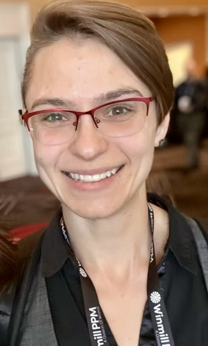

About Me

Professional Statement
I hope the selected employment history on my résumé
speaks for itself, but I’d like to fill in the blanks a bit. If I were to
assign myself a headline, it might be:
I am a high school dropout who went on to eventually earn a master’s
degree.
(In other words, I am persistent.) But beyond that, I am passionately eclectic.
The bulk of my career has been in the nonprofit sector, and has spanned property
and casualty insurance, tech support, theatrical direction and dramaturgy,
educational program management, fundraising, technical project management, and
content creation in the health and wellness space.
Each of these spheres may seem unrelated, but I am confident that pursuing my
curiosity with passion has led me to exactly where I should be professionally.
Doing so taught me to learn quickly and rapidly pivot in response to stimuli.
In addition it, has also allowed me to identify and leverage unexpected
connections between seemingly disparate fields. Every position has allowed
me to engage with new concepts and provided me with a wide (and deep) variety
of professional experiences. Finally, this breadth of experience has
introduced me to new communities, providing me with the opportunity to
interact with people from all walks of life and challenging me to live my
values of engaging with differing (and even contradictory) perspectives.
The Fun Stuff
I joke that conversations with me are like potato chips: you can't have just one.
In sincerity, engaging and connecting with people is one of life's great
joys, and one I try to indulge whenever possible. Conversation is just one way to
connect with others. Communities can be found and created anywhere
and building one just requires identifying common ground to get started.
Some of the communities I belong to are reflected in my interests:
| My Hobbies |
| Communities |
Related Interests |
| Arts |
-
Photography
- Crochet and yarn craft
- Theatre direction and performance
|
|
Culinary
|
- Dessert person
Unapologetc Vegan- Avocado enthusiast
|
| Movement |
- Spinning
- Rock climbing
- Weight lifting
- Running (sometimes)
|
| Learning |
|
Whether or not we belong to similar communities, I'd love to hear your story.
Reach out to me on LinkedIn
or through my Contact Me page.
Thanks for reading!